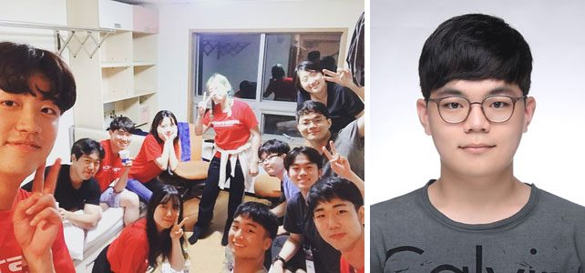

<左 기숙사에 모인 캠프 참가자들, 右 박병후 학생>
이미 2달 전에 끝난 행사를 게으름 때문에 미루고 미루다 이제서야 후기를 남긴다...ㅎ
비록 본선이 끝난 날로부터 꽤나 시간이 흘러가버렸지만, 지금도 종종 그날의 사진을 펼쳐보며 혼자 웃을 정도로 너무나 즐거운 시간이었다. 사실 본선 당일, 기차를 타고 내려가는 그 순간까지도 이 캠프가 그렇게 즐거운 추억을 안겨줄거라곤 전혀 예상하지 못했었다. 그저 운 좋게 합격한 공모전이기에 약간의 들뜬 마음과 함께, 본선을 잘 마무리해서 보다 좋은 결과를 거두고 싶다는 욕심만이 당시 내 마음의 전부였었다.
이번 포스텍 박태준미래전략연구소 공모전은 '사회 갈등'이라는 하나의 큰 테마와 5개의 하위 카테고리로 주제가 세분화되어 있었다. 그 중에서 우리 조가 잡은 주제는 '계층 간 갈등'이었는데, 핵심적인 아이디어는 '변수'라는 요인에 대해서 사회 전반이 보다 수용적인 태도를 가질 줄 알아야 하며, 이를 통해 기성 세대로부터 전해지게 된 '계층'이라는 요소를 전복 및 탈피해야 한다고 주장하는 내용이었다. (보다 자세한 원문 내용은 아래 링크로 들어가면 수상작에서 찾아볼 수 있다)
▶ 원문보기: [2018 청년 에세이 우수상 09] ‘변수’로 가득한 사회
1차에서 제출한 보고서는 충분히 준비를 한 덕분에 상당 부분 만족스러웠지만, 본선의 경우 한정된 시간 안에 발표를 진행하면서 원하던 바를 온전히 전달하지 못했다는 아쉬움이 다소 남았다. 결국 우리 조는 본선에서 우수상을 수상하게 되었다. 분명 너무나 감사한 상임에 틀림이 없었지만, 그렇다고 아쉬움이 남지 않았다면 그건 아마도 거짓말일 것이다.
그럼에도 이번 포스텍 공모전에 참가하길 정말 잘했다고 생각한 까닭은, 그곳에서 나와 동류의(?) 친구들을 여럿 만날 수 있었기 때문이었다. 사실 한국 사회에는 정말 다양한 종류의 갈등이 존재하고 여러 단체가 이 갈등의 완화를 위해 수없이 많은 노력을 하고 있지만, 쉽게 해결되는 문제와 갈등은 어디에도 없다. 그런 사회의 오랜 과업에 대해 과감히 도전하고 고민하는 친구들을 여럿 만날 수 있다는 것은 대회의 결과보다 훨씬 더 값진 경험이었다.
1박 2일의 짧은 여정에서 우리는 방 하나에 옹기종기 모여 한국 사회에 대해 토론을 하다가, 웃다가, 다시 의견을 나누며 하루밤을 꼬박 지새웠다. 그들 중 어느 누구도 이 사회의 발전과 개선에 대해 불가능이라는 단어를 입에 담지 않았다. 불가능은 그것을 부정해버리는 순간 도달 가능한 것으로 바뀌게 되며, 그 과정을 함께 할 동료가 곁에 있다는 것은 크나큰 위안이 되어준다. 내가 이번 캠프를 통해 얻은 것들 중 가장 값진 것이 바로 이 친구들이라 말하는 까닭은 바로 그 때문이다.
만일 누군가 나에게 이 대회에서 원하던 결과를 얻었느냐 묻는다면, 나는 '아니다'라고 답할 것이다.
그렇지만 만일 나에게 이 대회가 충분히 유의미했는지를 묻는다면, 나는 '아주 그렇다'라고 답할 것이다.
